E=MV*
het Model-View-Controller pattern
- frank bosma / @frenkie
aanleiding
het front-end vak professionaliseert

yay Fronteers
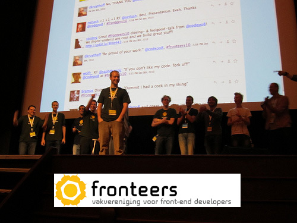yay vpro
websites -> complexe webapps
externe ontwikkelaars
kortom: behoefte aan
- structuur.
- modulaire,
- onderhoudbare,
- herbruikbare,
- overdraagbare code.
- eigenlijk...
doel: zo min mogelijk wtf's per minuut
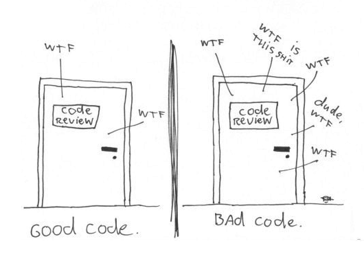het gebruik van Model-View-Controller (MVC) helpt daarbij
inhoudsopgave
- theorie: Design Patterns en MVC
- praktijkvoorbeelden: TodoMVC en VPRO
- conclusie
Design Patterns
First Things First
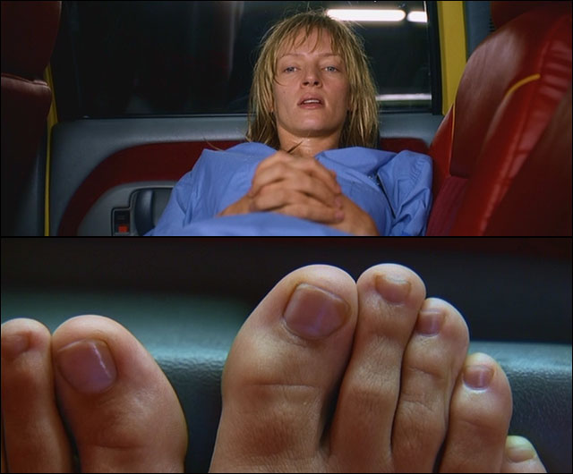Design Patterns
- MVC ≠ Design Pattern
- MVC = Architectural Pattern
- Architectural Patterns spelen op een hoger niveau, houden zich bezig met de algehele structuur van software
Design Patterns
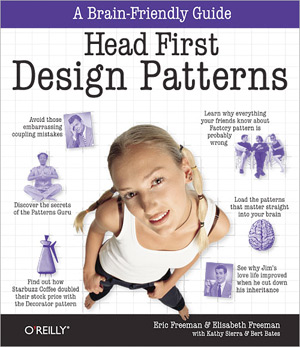MVC is a Pattern of Patterns
Daarom toch even kijken naar Design Patterns
Code should be matter-of-fact as opposed to speculative
Clean code makes it easy for other people to enhance it
Clean code reads like well-written prose
The rating of time spent reading vs. writing is 10:1
- Quotes van verscheidene programmeurs uit het boek Clean Code van Robert C. Martin -
Dat is waar Design Patterns bij helpen en wat ze vergemakkelijken
Design Patterns:
1 constante factor bij ontwikkelen van websites/webapps:
Verandering
Design Patterns bereiden je code voor op het aankunnen van verandering
Experience Reuse
Design Patterns zijn herbruikbare oplossingen voor problemen die vaak voorkomen bij het programmeren van software
Templates
Design Patterns zijn geen kant en klare stukken code, maar templates van best practices.
Je zorgt zelf voor de implementatie
Gedeelde vocabulair
Door kennis van Design Patterns zeg je meer met weinig. Code is leesbaarder en makkelijker over te dragen.
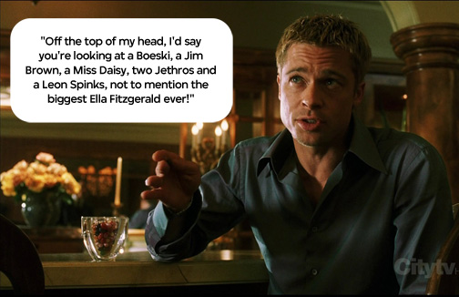
Historie Design Patterns
- 1987: voor het eerst in verband gebracht met toepassing in software
- 1994: populair door het boek:

- Design Patterns: Elements of Reusable Object-Oriented Software door de 'Gang of Four'
- Kortweg: het GoF boek
GoF boek
Legt een 23-tal Design Patterns uit a.d.h.v een opsplitsing in
- Creational
- Structual
- Behavioral
In feite allen gebaseerd op het volgende principe
het bieden van de mogelijkheid om een deel van een systeem onafhankelijk van alle andere delen aan te kunnen passen
Gebruik je ze al?
Facade
Het Facade Design Pattern biedt een versimpelde interface voor een set aan handelingen
nog meer Facades
// jQuery's
$.getJSON();
$('#result').load();
$.getScript();
// roepen onder water allen met andere instellingen aan:
$.ajax({
dataType:'json'|'html'|'script'
});
inzetten
Hoe gebruik je Design Patterns, hoe zet je ze in?
Nogmaals: Design Patterns zijn herbruikbare oplossingen voor terugkerende problemen binnen een bepaalde context
Dat probleem bestaat uit een doel en restricties. Zogeheten forces in de Design Pattern terminologie.
Alleen als de oplossing die een Design Pattern biedt een goede balans vindt tussen doel en restricties, is het nuttig
May The Force Be With You
Keep It Simple Stupid
- Je doel is eenvoud, kies voor de simpelste oplossing
- Probeer niet je code in een Design Pattern te vouwen
- Een Design Pattern volgt uit het probleem
Wanneer pas je een Design Pattern dan toe?
- Leer ze eerst kennen
-
- het GoF boek, maar ook andere Design Pattern catalogi, bevat per Pattern een aantal secties om te helpen bij de keuze.
- Refactoren is een goed moment om na te denken over het toepassen van Design Patterns
Online
- Essential JavaScript en jQuery Design Patterns
- Addy OsmaniVerGoFt: http://bit.ly/jsdesignpatterns
- Bevat handige cheat sheets: 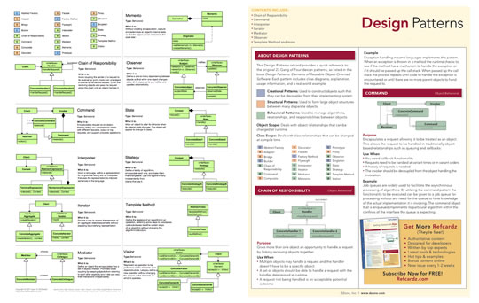
Model-View-Controller
definitie
Model-View-Controller deelt een applicatie op in 3 onderdelen:
- Model: data
- View: de interface
- Controller: reageren op input gebruiker
historie
MVC was conceived as a general solution to the problem of users controlling a large and complex data set.
zo werd het bedacht in 1979 door Trygve Reenskaug, eerder dan Design Patterns
-
Implementatie uitvoerig beschreven in 1987 in
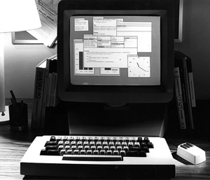- Applications Programming in Smalltalk-80(TM): How to use Model-View-Controller (MVC)
illustratie
De verbinding tussen de 3 onderdelen is als volgt:
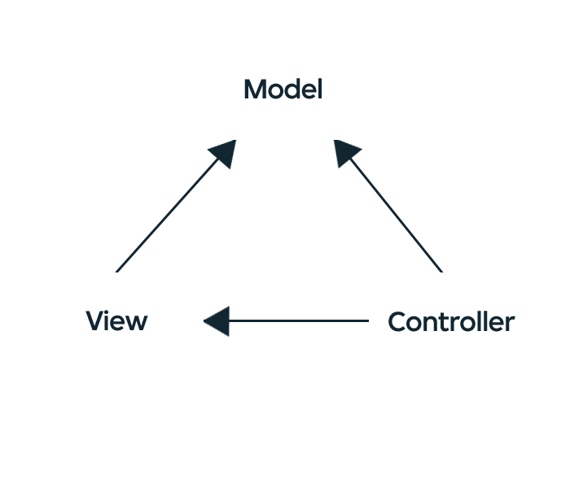kern
Separation of Concerns
- bij MVC het scheiden van content en presentatie
- elk onderdeel compleet onafhankelijk van de andere kunnen ontwikkelen, wijzigen, testen
Bij Smalltalk-80’s MVC ging het om computerapplicaties.
MVC en het web
specifiek, de front-end
sinds AJAX -> meer en meer webapps -> meer en meer MVC frameworks duiken op
Praktijk
TodoMVC
addyosmani.github.com/todomvc/
a project which offers the same Todo application implemented using MV* concepts in most of the popular JavaScript MV* frameworks
Van BackBone tot Ember, van Knockout tot Google’s AngularJS en van vanilla JavaScript tot onze eigen Hay Kranens Stapes
Waarom zoveel frameworks?
- Front-end MVC heeft te maken met JavaScript, maar ook met HTML, je presentatielaag
- Verbinding tussen JavaScript en HTML kan op veel manieren
- niet makkeljk een goede invulling te geven aan 'Separation of Concerns'
- ieder een mening; zoveel meningen zoveel frameworks
TodoMVC biedt:
- indruk van verschillende libraries d.m.v eenzelfde en eenvoudig voorbeeld: een todo lijst app
- welke stijl ligt jou?
- niet alle libraries/implementaties zijn puur MVC
MV*
- wijst op de verschillende varianten van MVC die ontstonden door een veranderend software landschap
- Twee formele varianten: Model-View-Presenter (MVP) en Model-View-ViewModel (MVVM)
- Beiden te vinden in TodoMVC
- Libraries als Backbone hebben de C in MVC helemaal een eigen invulling gegeven
- MV* familie is geboren
VPRO voorbeelden
3VOOR12
PlayQ
3VOOR12
ImageGallery
Leermoment: overbodig; beter 1 View en die afhankelijk van de staat van de gallery, fullscreen dan wel normaal, stylen.
Festival Site
Mediaservice
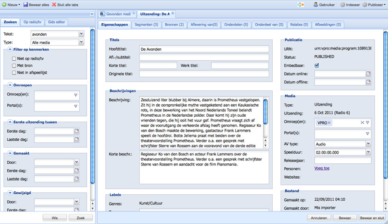
- Inzet ExtJS 4
- Ondersteunt MVC in de core, o.a. door conventie in folderstructuur
Woord
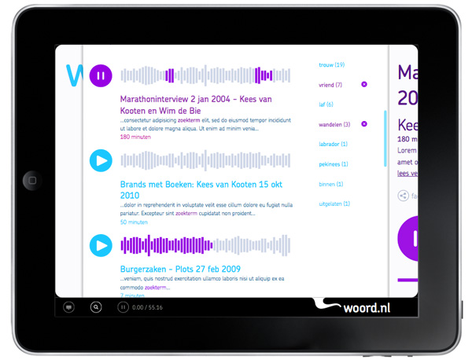Conclusie
Model-View-Controller levert het energie op?
Ja
Met name bij de VPRO omdat we met meerdere front-enders aan een project werken
- Onderhoudbaarheid, leesbaarheid van je code. Het is duidelijk waar wat gebeurt
- Door splitsing van verantwoordelijkheden is parallel te werken aan View, Model dan wel Controller code in 1 project
- Communicatie naar interne/externe ontwikkelaars door een gedeelde vocabulair
Punten om rekening mee te houden
- KISS: MVC moet de juiste oplossing zijn voor je probleem; een eenvoudige oplossing heeft de voorkeur
- Practice makes perfect; je moet tegelijkertijd wel kunnen oefenen
- Iedereen in je team moet er kennis van hebben
- Kennis van Design Patterns an sich biedt een hoop voordeel
GoF boek te groot? Begin met een online artikel zoals dat van Addy Osmani
E=MV* - 1 library to rule them all?
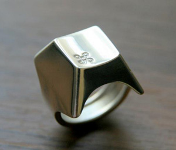
Elk heeft z'n voordelen, nadelen en toepassingen.
Niet alleen je mening telt, ook de eisen van je app.
Belangrijk is de kern van Model-View-Controller: de scheiding van data, logica en presentatie. Hoe je die invult, dat beslis jij.
Vragen?
Slides:
http://frenkie.github.com/mvcpreso
- frank bosma / @frenkie